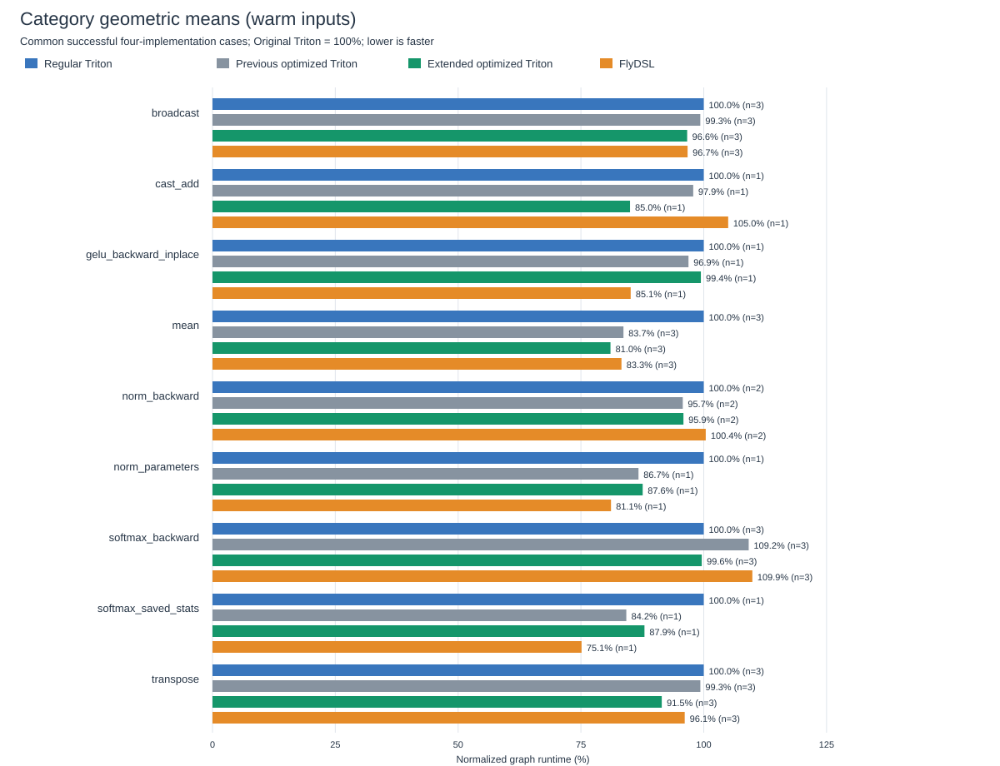

All math functions retain the existing precision policy. Lowering/layout changes and balanced cache tuning are opt-in. Four implementations are measured in rotating rounds with the same inputs: regular Triton, previous optimized Triton, extended optimized Triton, and FlyDSL. Negative percentages are regressions.
These are compiled operation graphs on one MI355X, not full-model training throughput. Accuracy checks use three input seeds. Direct GPU-event timing and CUDA graph replay are reported separately. A 256 MiB flush precedes each sample; warm measurements then touch input storage. Mutation restores occur before timing.
18 cases; 0 variant failures. Per-case comparisons | Per-operation summary | Raw timing CSV | Failures
| Operation | Cases | vs regular Triton | vs previous optimized Triton | vs FlyDSL |
|---|---|---|---|---|
| broadcast | 3 | 3.38% | 2.69% | 0.09% |
| cast_add | 1 | 15.01% | 13.15% | 19.03% |
| gelu_backward_inplace | 1 | 0.58% | -2.60% | -16.78% |
| mean | 3 | 18.98% | 3.16% | 2.68% |
| norm_backward | 2 | 4.13% | -0.14% | 4.52% |
| norm_parameters | 1 | 12.43% | -0.98% | -7.95% |
| softmax_backward | 3 | 0.41% | 8.75% | 9.37% |
| softmax_saved_stats | 1 | 12.07% | -4.39% | -17.05% |
| transpose | 3 | 8.55% | 7.91% | 4.86% |

Direct execution: all per-operation graphs | CUDA graph replay: all graphs